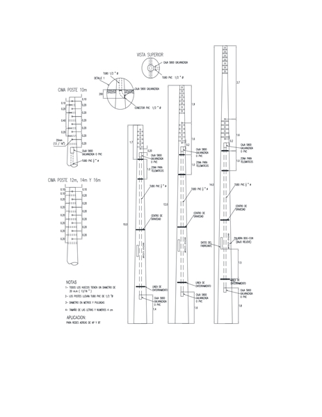
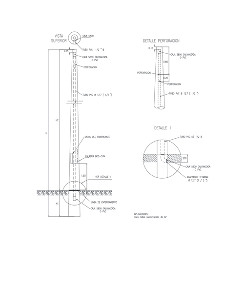

Siempre es más fácil conocer las normas ENEL-CODENSA
Rolex Rolex gold watch, compared with ordinary materials, gold watches are often expensive, but the replica rolex gold watch has the role of swiss replica watches hedging, so that it often becomes the first choice for collectors. The gold watch has value in the world, largely because the omega replica watch brand launched a commemorative limited edition watch or a replica hublot complex movement process or artistic attainments deep watches, mostly preferred gold precious metals such material. These watches tend to have a strong hedging function, therefore, Rolex Rolex gold watch reputation.

ET209 Postes de concreto para Alumbrado Público
Datos adicionales
Número de especificación
ET209
Fecha de vigencia
04/08/2022
Herramientas adicionales
- Contenido Ocultar
- 1. OBJETO
- 2. ALCANCE
- 3. CONDICIONES AMBIENTALES
- 4. CONDICIONES DE SERVICIO
- 5. SISTEMAS DE UNIDADES
- 6. NORMAS RELACIONADAS
- 7. DEFINICIONES
- 8. REQUERIMIENTOS TÉCNICOS Y PARTICULARES
- 8.1 Calculo y Diseño
- 8.2 Recubrimiento de la Armadura
- 8.3 Resistencia a la Compresión del Concreto
- 8.4 Acero de Refuerzo Principal
- 8.5 Deformaciones o Flechas Bajo Carga
- 8.6 Longitud de Enterramiento
- 9. FABRICACIÓN DE LOS POSTES
- 9.1 Tipo de Poste Según su Forma Geométrica.
- 9.2 Armado de la Canasta
- 9.3 Preparación de la Formaleta para la Operación de Vaciado
- 9.4 Perforaciones
- 9.5 Vaciado del Concreto
- 9.6 Curado
- 9.7 Fraguado con Acelerante
- 9.8 Desmolde de los Postes
- 10. ENSAYO DE LABORATORIO Y PRUEBAS DE CARGA
- 10.1 Ensayos de Laboratorio
- 10.2 Prueba de Carga
- 10.3 Obligación de Ejecución de los Ensayos y Pruebas
- 11. SUMINISTRO Y RECEPCIÓN DE POSTERÍA
- 11.1 Tolerancias Aceptadas
- 11.3 Recepción de Postería
- 12. POSTES ESPECIALES
- 13. REQUISITOS DE LAS OFERTAS
- 14. CERTIFICADOS DE CONFORMIDAD
- 15. VIDA UTIL Y GARANTIA
1. OBJETO
La presente especificación técnica tiene por objeto establecer las características y dimensiones que deben cumplir los postes de concreto que se emplean como soportes estructurales para alumbrado público, líneas aéreas de distribución de media y baja tensión.2. ALCANCE
Los postes serán instalados, en cualquier zona del área de cobertura de CODENSA S.A. y ciudades o municipios de Colombia, estos postes son usados para la fijación de fuentes luminosas, de los diferentes elementos utilizados en los sistemas de distribución urbana y redes exclusivas de alumbrado público.Los suelos donde son instalados podrán ser terrenos de relleno, arenosos, rocosos, arcillosos semiduros, con una capa de profundidad variable de humus, abarcando químicamente suelos desde ácidos a alcalinos y desde oxidantes a reductores con gran variedad en la cantidad y tipo de sales solubles.
3. CONDICIONES AMBIENTALES
El ambiente donde serán instalados los postes de concreto podrá tener las siguientes características dentro del área de concesión de CODENSA S.A. E.S.P, bajo las siguientes condiciones:| CARACTERÍSTICAS AMBIENTALES | |
| Altura sobre el nivel del mar | 0 m - 2700 m |
| Ambiente | Tropical |
| Humedad relativa (IEC 60721-2-1) | 90% |
| Temperatura máxima y mínima | 27 ºC y - 5 ºC respectivamente. |
| Temperatura promedio | 14 ºC. |
| Nivel de polución (IEC 60815) | Medio (II) |
4. CONDICIONES DE SERVICIO
Los postes podrán ser instalados, en cualquier zona del área de cobertura de CODENSA S.A. y ciudades o municipios de Colombia.5. SISTEMAS DE UNIDADES
En todos los documentos técnicos se deben expresar las cantidades numéricas en unidades del sistema Internacional. Si se usan catálogos, folletos o planos, en sistemas diferentes de unidades, deben hacerse las conversiones respectivas.6. NORMAS RELACIONADAS
Los postes deberán cumplir con las siguientes normas de fabricación y ensayos:| NORMA | DESCRIPCIÓN | |
| NTC | 2 | Ensayo de tracción para productos de acero. |
| NTC | 30 | Cemento Portland. Clasificación. |
| NTC | 116 | Alambre duro de acero para refuerzo de concreto. |
| NTC | 121 | Cemento Pórtland. Especificaciones físicas y mecánicas |
| NTC | 159 | Alambres de acero sin recubrimiento liberados de esfuerzo para concreto pretensado. |
| NTC | 161 | Barras lisas de acero al carbono para hormigón armado. |
| NTC | 174 | Especificaciones de los agregados para concreto |
| NTC | 248 | Barras y rollos corrugados de acero al carbono para hormigón armado. |
| NTC | 321 | Cemento Pórtland. Especificaciones químicas. |
| NTC | 673 | Ensayo de resistencia a la compresión, de cilindros normales de hormigón. |
| NTC | 1097 | Control estadístico de calidad. Inspección por atributos. Planes de muestra única, doble y múltiple con rechazo. |
| NTC | 1299 | Aditivos químicos para hormigón. |
| NTC | 2010 | Torones de acero de siete alambres sin recubrimiento para concreto pretensado. |
| NTC | 6421 | Agregados gruesos reciclados para uso en el concreto hidráulico |
| NTC | 6422 | Ensayo de clasificación de los componentes de los agregados gruesos reciclados |
| NTC | 5551 | CONCRETOS. Durabilidad de estructuras de concreto. |
| NSR | 10 | Reglamento Colombiano de Construcción Sismo Resistente |
| RETIE | Reglamento técnico de instalaciones eléctricas | |
| RETILAP | Reglamento técnico de iluminación y alumbrado público | |
| Código Colombiano de Construcciones Sismo Resistentes. Decreto 1400 de 1984. | ||
| A.W.S.D 12.1 (A.C.I 318) - Prácticas recomendables para soldar acero de refuerzo, insertos metálicos y conexiones, en construcciones de concreto reforzado. | ||
Las normas citadas en la presente especificación (o cualquier otra que llegare a ser aceptada por CODENSA S.A.) se refieren a su última revisión
7. DEFINICIONES
Se establecen las siguientes definiciones para efectos de esta especificación técnica:- ADITIVO
Material diferente del cemento, agregados o agua que se mezcla con el concreto, para modificar una o varias de sus propiedades sin perjudicar su durabilidad, ni su capacidad para resistir esfuerzos.
- AGREGADOS
Conjunto de partículas inertes, naturales o artificiales, que al mezclarse con el cemento hidráulico y el agua, producen el concreto.
- AROS DE ARMADO
Elementos circulares, en varilla lisa de diámetro variable, espaciados adecuadamente a lo largo del eje del poste, que permiten el amarre de las varillas longitudinales y que además contrarrestan el esfuerzo cortante.
- BASE
Plano o sección transversal extrema en la parte inferior del poste.
- CANASTA
Conjunto de varillas longitudinales, cables o alambres unidos a aros transversales o espirales, destinadas a contrarrestar los esfuerzos de flexión, tracción, cortadura y tensión diagonal, producidos por la carga aplicada al poste.
- CARGA DE DISEÑO
La carga aplicada a 20 cm de la cima, para la cual se calculó y diseñó el poste.
- CARGA DE ROTURA
Es aquella que aplicada a 20 cm de la cima, produce el colapso estructural del poste por fluencia del acero, por aplastamiento del concreto o por ambas causas en forma simultánea.
- CARGA DE TRABAJO
Carga máxima real que se podrá aplicar al poste, en sentido normal a la línea y a 20 cm de la cima, sin que se presente deformación permanente mayor que el 5% de la deflexión máxima permitida, cuando se aplica el 40% de la carga mínima de rotura especificada.
- CENTRIFUGADO
Acción de someter a la fuerza centrífuga el poste recién vaciado, con el fin de producir una compactación alta en el concreto y gran resistencia a la humedad y a los agentes atmosféricos.
- CIMA
Plano o sección transversal extrema, en la parte superior del poste.
- COEFICIENTE DE SEGURIDAD A LA ROTURA
Relación entre la carga de rotura mínima y la carga de trabajo especificadas, que para esta norma se establece en 2,0 para postes autosoportados con carga de rotura mayor a 2000kgf y 2,5 para postes con carga de rotura menor o igual a 2000kgf (Ver tabla 2).
- COLAPSO
Condición que se presenta cuando el poste, bajo la acción de la carga aplicada, experimenta grandes deformaciones, causadas por la fluencia del acero y que ocasionan el aplastamiento del concreto, en la zona del poste sometida a compresión.
El colapso se inicia cuando se presentan desprendimientos del concreto, grietas grandes y deformaciones pronunciadas, sin incrementos de carga.
- CONCRETO
Mezcla de cemento hidráulico, agregado fino (arena), agregado grueso (gravilla) y agua.
- CONCRETO PRETENSIONADO
Concreto de alta resistencia, sometido mediante cables tensionados, a grandes cargas de compresión que eliminan los esfuerzos de tensión y disminuyen las fisuras producidas por las cargas aplicadas.
- CONCRETO REFORZADO
Concreto que tiene un refuerzo constituido por varillas de acero, que trabajan principalmente a la tracción y que actúan en forma conjunta, con el fin de contrarrestar los momentos flectores producidos por las cargas actuantes.
- CONICIDAD
Relación entre la diferencia de los diámetros de cima y base y la longitud del poste.
- CURADO DEL CONCRETO
Tratamiento que se le da al concreto, una vez vaciado, para impedir la rápida evaporación del agua de amasado, suavizando la retracción y evitando el agrietamiento de la superficie del poste.
- DEFORMACIÓN PERMANENTE
Flecha permanente, registrada una vez ha dejado de actuar la carga de trabajo sobre el poste.
- EMPALMES
Unión de dos tramos de barras del refuerzo principal, soldadas o amarradas con alambre.
- EMPALME CON BASTONES
Unión de dos tramos de varillas a tope, y ligadas entre sí, mediante un tramo de varilla corta, a la que van unidas con puntos de soldadura los extremos de las dos varillas, en una longitud especificada.
- ESPIRALES
Varillas lisas o alambres arrollados alrededor de las barras longitudinales, con un paso especificado, que sirven de apoyo a éstas y que además proporcionan refuerzo contra los esfuerzos de cortadura y tensión diagonal a la vez que le dan cierta resistencia al poste a la torsión.
- FLECHA
Desplazamiento que sufre la cima del poste, en dirección normal a su eje, bajo la acción de una carga aplicada.
- FORMALETAS
Moldes metálicos, de la forma y dimensiones del poste, en las cuales se coloca la canasta y se vierte el concreto fresco para moldear el poste.
- LONGITUD DE EMPOTRAMIENTO (H1)
Distancia entre la sección de empotramiento y la base del poste.
- LONGITUD TOTAL (H)
Distancia entre la cima y la base del poste.
. LONGITUD UTIL (H2)
Distancia entre la cima y la sección de empotramiento del poste.
- PERFORACIONES
Agujeros cilíndricos, a través del eje central de la sección del poste, utilizados para la fijación de elementos de la red.
- PLANO DE APLICACIÓN DE ESFUERZOS
Plano o sección transversal del poste en donde se aplican las cargas horizontales.
- PLANO TRANSVERSAL
Plano o sección perpendicular al eje longitudinal del poste.
- RECUBRIMIENTO DE LA ARMADURA
Distancia mínima especificada, que debe existir entre el borde o superficie de cualquier elemento metálico de la armadura y la superficie interior y exterior del poste.
- REFUERZO
Acero en varillas, alambre o cables, colocado para absorber esfuerzos de tensión, compresión, cortadura o torsión, en conjunto con el concreto.
- SECCIÓN DE EMPOTRAMIENTO
Plano o sección transversal del poste, a nivel de piso, donde se produce el máximo momento flector, por efecto de las cargas de trabajo.
- SEPARADORES
Elementos no metálicos, ni biodegradables de resistencia tal que garantice la separación entre la canasta y la cara interior de la formaleta durante el proceso de vaciado del concreto y que permite asegurar el recubrimiento especificado de la armadura.
- TRASLAPO
Tipo de empalme en que las barras se unen al montar un extremo de una sobre el extremo de la otra, en una longitud especificada y unidas entre sí mediante puntos de soldadura o amarre con alambre.
- VARILLA CORRUGADA
Varilla de acero con el núcleo de sección circular, en cuya superficie lleva unos resaltes, que tienen por objeto aumentar la adherencia entre el concreto y el acero.
- VARILLA LISA
Varilla de acero de sección transversal circular, sin resaltes o nervaduras.
- VARILLA TORSIONADA
Varilla lisa o corrugada que el fabricante de postes somete a un proceso de torsión y alargamiento, con el fin de mejorar sus condiciones físicas y mecánicas.
- VIBRADO
Sistema de compactación del concreto mediante aparatos vibratorios de alta frecuencia que tiene por objeto disminuir la porosidad del concreto, distribuir uniformemente los áridos y obligar a que la mezcla cubra toda la superficie interior de la formaleta.
8. REQUERIMIENTOS TÉCNICOS Y PARTICULARES
8.1 Calculo y Diseño
8.1.1 Cargas Mínimas de RoturaSe establecen las siguientes cargas mínimas de rotura para todos los postes de concreto reforzado y pretensionado incluidos en esta norma.
Carga mínima de rotura
510 kgf
750 kgf
1 050 kgf
8.1.2 Parámetros Geométricos
Los postes de concreto reforzado o de concreto pretensionado, tendrán las características geométricas establecidas en la tabla 1.
TABLA 1. PARÁMETROS GEOMÉTRICOS
| Carga de Rotura mín. (kgf) | Longitud Total (m) | Diámetros (cm) | |
| Cima | Base | ||
| 510 | 10,0 | 14,0 | 29,0 |
| 1 050 | 10,0 | 19,0 | 34,0 |
| 510 | 12,0 | 14,0 | 32,0 |
| 750 | 12,0 | 16,0 | 34,0 |
| 1 050 | 12,0 | 19,0 | 37,0 |
| 510 | 14,0 | 16,0 | 37,0 |
| 750 | 14,0 | 16,0 | 37,0 |
| 1 050 | 14,0 | 19,0 | 40,0 |
| 750 | 16,0 | 18,0 | 42,0 |
| 1 050 | 16,0 | 21,0 | 45,0 |
8.1.3 Conicidad
La conicidad debe ser de 1,5 cm/m de longitud, para todos los tipos de postes de sección circular llena o anular, ya sean centrifugados, vibrados o pretensionados.
8.1.4 Carga de Trabajo
La carga de trabajo es la resultante de dividir la carga mínima de rotura, por el coeficiente de seguridad.
Según lo anterior, las cargas de trabajo para cada una de las cargas mínimas de rotura se establecen en la Tabla 2.
TABLA 2. CARGAS DE TRABAJO
| Carga mínima de rotura | Carga de Trabajo |
| 510 kgf | 204 kgf |
| 750 kgf | 300 kgf |
| 1 050 kgf | 420 kgf |
8.2 Recubrimiento de la Armadura
El recubrimiento mínimo de la armadura debe ser de 20 mm, medidos desde la superficie de la armadura hasta la cara o superficie interior y exterior del poste.8.3 Resistencia a la Compresión del Concreto
La resistencia mínima a la compresión para el concreto, debe ser de 245kg/cm² (3 500 psi) para los postes con refuerzo convencional, y de 350 kg/cm² (5 000 psi) para los de concreto pretensionado. Esta resistencia se debe verificar mediante ensayos de laboratorio de los cilindros tomados de varias bachadas, de acuerdo con la norma ICONTEC 673.En cuanto a la calidad del concreto, se deben seguir los procedimientos establecidos en el capítulo c.4 del Código Colombiano de Construcciones Sismo-Resistentes. Decreto 1 400 de 1984.
Con la debida anticipación, el fabricante debe presentar a consideración de la interventoría, el diseño de la mezcla que va a utilizar. La interventoría podrá exigir ensayos de prueba de la mezcla utilizada.
Para concretos que utilicen aditivos plastificantes, las mezclas se deberán diseñar utilizando el aditivo y de acuerdo con los ensayos de laboratorio que se deben realizar.
Las pruebas de asentamiento se realizarán cuando la interventoría así lo exija. Los asentamientos resultantes deben coincidir con los especificados en el diseño de la mezcla.
Se realizarán ensayos de cilindros, con edades de 7, 14 y 28 días, calculando por proyección para las 2 primeras, la resistencia que tendrá el concreto a los 28 días.
La resistencia promedio de los ensayos de los cilindros debe ser superior o por lo menos igual a la especificada en el diseño más 85kg/cm2.
El costo de todos los ensayos de laboratorio, ordenados por la interventoría, para el control de calidad del concreto, correrá por cuenta del fabricante.
8.4 Acero de Refuerzo Principal
El acero de refuerzo utilizado en la fabricación de los postes, debe cumplir con las normas ICONTEC 116, 161 ó 248. Para los postes pretensionados el refuerzo debe cumplir con lo especificado en la norma ICONTEC 2010 ó 159.Las varillas de acero estructural deben tener esfuerzo nominal de fluencia mínimo de 60000 psi.
Bajo responsabilidad del fabricante se aceptará el torsionamiento del acero.
8.5 Deformaciones o Flechas Bajo Carga
El poste, bajo la acción de una carga aplicada a 20 cm de la cima, con una intensidad igual al 40% de la carga mínima de rotura, no debe producir una flecha superior al 3% de la longitud libre del poste y al cesar la acción de esa carga, la deformación permanente no debe ser superior al 5% de la deflexión máxima especificada para el tipo de poste correspondiente.De acuerdo con lo anterior, en la tabla 3 se establecen límites para deflexión bajo carga y deformación permanente.
TABLA 3. DEFORMACIONES BAJO CARGA
| Tipo de poste (m x kgf) | Carga de trabajo (kgf) | Deflexión bajo carga (mm) | Deformación permanente (mm) |
| 10,00 x 510 | 204 | 252 | 12,6 |
| 10,00 x 1 050 | 420 | 252 | 12,6 |
| 12,00 x 510 | 204 | 306 | 15,3 |
| 12,00 x 750 | 300 | 306 | 15,3 |
| 12,00 x 1 050 | 420 | 306 | 15,3 |
| 14,00 x 750 | 300 | 360 | 18,0 |
| 14,00 x 1 050 | 420 | 360 | 18,0 |
| 16,00 x 750 | 300 | 410 | 21 |
| 16,00 x 1 050 | 420 | 410 | 21 |
8.6 Longitud de Enterramiento
Para definir la longitud de empotramiento, se debe aplicar la siguiente fórmula:H1 = 0,1 H + 0,60 (m)
H1 = Longitud de empotramiento (m).
H = Longitud total del poste (m).
9. FABRICACIÓN DE LOS POSTES
Los postes se deben fabricar con el uso exclusivo de formaletas metálicas, que aseguren uniformidad en su forma y exactitud en sus dimensiones.Se pueden fabricar con el uso de uno de los sistemas existentes, siempre y cuando se cumpla con las especificaciones que se establecen en esta norma.
Para postes pretensados se debe realizar un recubrimiento en la base y en la cima del poste con el fin de lograr la protección de los cables, alambres o elementos metálicos de pretensado. El recubrimiento utilizado, cualquiera que sea incluyendo la pintura epóxica debe garantizar como mínimo la vida útil esperada.
En ningún caso se aceptarán los postes amasados y compactados a mano.
Se debe considerar las siguientes normas para los materiales de construcción del poste:
TABLA 4. NORMAS APLICABLES A MATERIALES
| Material | Norma Aplicable |
| Cemento | NTC 030 |
| NTC 121 | |
| NTC 321 | |
| Agregados (grava) | NTC 174 |
| Acero | NTC 2 |
| NTC 116 | |
| NTC 159 | |
| NTC 161 | |
| NTC 2010 | |
| NTC 248 | |
| Hormigón | NTC 673 |
| NTC 1299 |
9.1 Tipo de Poste Según su Forma Geométrica.
Los postes de concreto pueden ser de sección circular llena o sección anular ahuecada.9.2 Armado de la Canasta
Las varillas longitudinales del refuerzo principal, deben ir aseguradas mediante amarres con alambre o puntos de soldadura alternados, sobre los aros de armado o la espiral en varilla, según sea el caso.La canasta debe llevar como mínimo, seis varillas del refuerzo principal, a todo lo largo del poste, fuera de las demás varillas cortas que completan el refuerzo. En las cuatro varillas largas, se colocarán en forma alternada cada metro y cubriendo un ángulo de 180°, separadores que aseguren el recubrimiento mínimo especificado. Las varillas largas irán distribuidas simétricamente y entre éstas, se distribuirán equilibradamente, las varillas cortas que completan el refuerzo.
La soldadura utilizada en el armado de la canasta, debe ser del tipo de baja penetración, y según lo descrito en la norma A.W.S. D 12.1 “Prácticas recomendables para soldar acero de refuerzo, insertos metálicos y conexiones en construcciones de concreto reforzado” emitida por la American Welding Society, la cual está incluida dentro del código A.C.I 318.
9.2.1 Aros de Acero.
En caso de que se utilicen aros, estos se fabricarán en varilla lisa o corrugada de 6,4 mm de diámetro mínimo.
Los aros, además de servir de apoyo a las varillas de refuerzo principal, forman parte del refuerzo del concreto contra el corte, de tal forma que su colocación, especialmente en las zonas del poste en donde se requiere éste refuerzo, se debe calcular, con base en la carga mínima de rotura especificada.
En las zonas del poste que no requieran de refuerzo al corte y en donde los aros se utilicen como simple apoyo del refuerzo principal, estos se colocarán a una distancia máxima de un metro de separación entre ellos.
El diámetro de los aros se debe calcular cuidadosamente, teniendo en cuenta la conicidad del poste y la distancia de recubrimiento de las varillas longitudinales.
9.2.2 Espiral de varilla lisa.
En caso de no usar los aros de armado y utilizar la espiral, ésta se fabricará en varilla lisa de 6,4 mm de diámetro, con un paso máximo de 150 mm y se deberá calcular de manera que contrarreste el esfuerzo cortante.
Como en el caso de los aros de armado, las varillas de refuerzo longitudinal deberán estar amarradas con alambre o unidas con puntos de soldadura alternados, de tal forma que cumpla con el recubrimiento establecido en el numeral 8.2.
9.2.3 Espirales en alambre.
En el caso de usar aros de armado, una vez colocadas las varillas de refuerzo principal, se procederá a rodear la canasta con dos espirales en alambre No. 14, como mínimo, arrolladas de tal manera que se crucen en X, con un paso máximo de 150 mm.
Las espirales en alambre, además de proporcionar una adecuada resistencia a los esfuerzos de torsión, sirven para contrarrestar la tensión diagonal, que es la que causa los agrietamientos transversales, en la superficie del poste.
Nota. En postes pretensados se acepta alambre de bajo carbono de resistencia mínima de 54 kg/cm2, como calibre mínimo 14.
9.2.4 Empalmes por traslapo.
Aunque los empalmes de varilla se deben tratar de evitar, muchas veces es imposible lograrlo, por la longitud comercial y por economía.
En una sección transversal determinada, no se permitirá más de un empalme por cada cinco varillas.
En la zona de empotramiento (± 300 mm de la sección de empotramiento) no se permitirán empalmes por traslapo.
Las secciones del poste con empalmes, deben estar separadas entre sí 500 mm, como mínimo. Sólo se permitirá un empalme por varilla.
Las longitudes mínimas de los traslapos para los diámetros más usados de las varillas en la fabricación de postes, son las siguientes:
TABLA 5. LONGITUDES MÍNIMAS DE TRASLAPO
| Varilla de Diámetro | Longitud Mínima de Traslapo | |
| (pulg) | (mm) | (mm) |
| 3/8 | 9.5 | 340 |
| 1/2 | 12.7 | 450 |
| 5/8 | 15.9 | 560 |
| 3/4 | 19.1 | 690 |
9.2.5 Empalme con bastón.
En el caso de los empalmes con bastón, la longitud de este será igual a la establecida para el empalme por traslapo. El bastón debe tener el mismo diámetro de las varillas que se van a unir.
Cada varilla se fijará a la mitad del bastón, mediante puntos de soldadura, y en el espacio entre los dos extremos de las varillas se colocará otro punto de soldadura que las ligue al bastón.
9.3 Preparación de la Formaleta para la Operación de Vaciado
Antes de proceder al vaciado del concreto, la formaleta deberá estar limpia y libre de residuos de concreto u otros elementos.Tanto la base como la tapa de la formaleta, se aceitarán en la superficie interior, con el fin de evitar que el concreto se adhiera a sus paredes y dificulte la operación de desmolde.
La formaleta debe garantizar un cierre adecuado en toda su longitud, de tal forma que evite el escape de mortero y la formación de grietas y ranuras a lo largo de la unión.
9.4 Perforaciones
Todos los postes de concreto para alumbrado público de avenidas con brazos metálicos deberán llevar, un número de perforaciones cuyas distancias entre ellas y sus características se especifican en la figura 1. Redes de MT AP y BT y la figura 2. Redes subterráneas de AP.Ninguna de las partes de la armadura de refuerzo del poste, deberá ser visible por esas perforaciones.
Ninguna perforación podrá tener una desviación mayor a 5 mm, con respecto al plano diametral del poste que contiene su eje longitudinal.
Los postes deben tener dos cajas 5800 galvanizadas o PVC, una localizada a una distancia de 200 mm por debajo de la marcación de empotramiento y la otra en la parte superior del poste, a 200 mm por debajo de la última perforación en los postes de AP y BT (ver Figura) 1 y a 150mm de la cima en los postes exclusivos de AP (ver Figura 2). Además, Debe existir un ducto PVC de diámetro ½ pulg. inmerso en el armazón del poste que conecte ambas cajas 5800.
9.5 Vaciado del Concreto
Una vez colocada la canasta de refuerzo sobre la formaleta, con los respectivos separadores, y sean instalados los pasadores utilizados para las perforaciones, se iniciará el vaciado a lo largo de la formaleta.El anillo de acero galvanizado de 1 ½” (38,1 mm) X 1/8” (3,17 mm) y los insertos roscados deben ser instalados en la formaleta antes de fundir el concreto y de tal manera que se asegure que estos elementos no se moverán dentro del proceso de vibrado ó centrifugado.
Al vaciar el concreto sobre la formaleta, se debe hacer lo más cerca a ésta, con el fin de evitar la disgregación de los materiales.
El concreto se debe vaciar inmediatamente después de su amasado.
No se permitirá utilizar el sistema de colgar la canasta para fijar la distancia de recubrimiento, dado que no garantiza ni la uniformidad, ni la exactitud de la distancia de recubrimiento.
9.5.1 Poste vibrado.
El vaciado del concreto se hará simultáneamente con la operación de vibrado, vertiendo el concreto a todo lo largo de la formaleta, en capas sucesivas, sin suspender la vibración.
El poste de concreto vibrado, tendrá las mismas características geométricas y estructurales de los postes fabricados mediante otros sistemas.
La vibración del concreto tiene por objeto, obtener una masa lo más compacta y homogénea posible, utilizando la mínima relación agua / cemento. De esta manera se logra un asentamiento bajo.
El fabricante debe acreditar mediante certificación de laboratorio idóneo y responsable, las características físicas y estructurales de la mezcla o dosificación del concreto utilizado.
La vibración se deberá efectuar mediante vibradores de contacto, sobre la formaleta o a través de mecanismos que le transmitan vibración. El molde o formaleta deberá estar apoyado sobre una base flexible, con el objeto de que la acción de vibrado se transmita en toda su magnitud a la formaleta.
El vibrador debe tener la potencia suficiente y la frecuencia adecuada para desarrollar la acción de compactación de la masa de concreto, distribuirlo uniformemente y evitar la formación de hormigueros y burbujas.
Los postes de concreto vibrado, de sección circular, se pueden fundir a sección plena o a sección anular, en este caso, mediante el uso de un vástago o formaleta central cónica, que genere una perforación a todo lo largo del eje.
En los postes de sección circular plena, el vibrado debe ser de más intensidad que en los postes de sección anular, debido a que la masa de concreto que se debe vibrar, es mucho mayor.
Una vez terminado el vaciado del concreto y vibrado del poste, se le dará un buen acabado a la zona o ventana por donde se hizo el vaciado del concreto, utilizando para esta operación una herramienta adecuada, que le dé un aspecto similar al del resto de la superficie del poste.
Los pasadores se deben extraer después de desformaletear el poste, con el fin de no producir deterioro en las perforaciones.
9.5.2 Poste centrifugado.
En el poste centrifugado, el vaciado de concreto se deberá hacer dosificando progresivamente la cantidad de mezcla, con el fin de que la perforación longitudinal central producida por la fuerza centrífuga sea de espesor uniforme y cubra por completo la canasta, conservando a todo lo largo del poste el mínimo recubrimiento especificado.
Como el poste vibrado, el poste centrifugado tendrá las mismas características geométricas y estructurales de los fabricados por otros sistemas.
El concreto vaciado en la formaleta, es sometido a rotación sobre su eje, originándose una fuerza centrífuga que presiona la mezcla de concreto contra la pared interior de la formaleta, produciendo la compactación centrífuga.
Los agregados más pesados se mueven hacia la periferia, mientras que los livianos son impulsados hacia el interior. El agua por ser el elemento más liviano, es separada de la mezcla y drenada hacia la perforación central.
El proceso de centrifugación del poste, depende del número de revoluciones por minuto de la máquina centrifugadora y de un tiempo de centrifugado tal, que garantice el cumplimiento de las condiciones especificadas en este numeral y no se presente disgregación de materiales, hormigueros ni burbujas.
El concreto utilizado para este tipo de postes, deberá tener una relación agua / cemento y un asentamiento bajos. El fabricante debe certificar las características y calidad de la mezcla utilizada.
9.5.3 Poste pretensionado.
Con excepción del sistema de armadura o canasta, el poste pretensionado sigue el mismo proceso de fabrica¬ción del poste vibrado o centrifugado, que se ha descrito con anterioridad.
El refuerzo de pretensionamiento, debe cumplir con las normas ICONTEC 159 ó 2010, el pretensionamiento inicial no deberá transfe¬rirse al concreto hasta que éste no tenga una resistencia de 245 kg/cm², o una resistencia equivalente a 167 veces el esfuerzo máximo esperado en el momento de transferencia, y antes de que ocurran las pérdidas de tensionamiento.
9.6 Curado
El curado de los postes, una vez fundidos, se puede efectuar a través de los siguientes sistemas:9.6.1 Curado con Sellantes.
Este sistema consiste en cubrir toda la superficie exterior del poste con un compuesto plástico, que impide la evaporación rápida del agua de fraguado.
9.6.2 Curado en piscina.
En este sistema, el poste una vez desformaleteado, es sumergido en una piscina, con agua apta para concreto (de acuerdo con el capítulo C3.4 del Código Colombiano de Construcciones Sismo Resistentes, Decreto 33 de 1998) de manera que lo cubra totalmente y permanece en ella el tiempo necesario para que se produzca su fraguado sin retracciones o agrietamientos.
9.6.3 Curado por Vapor.
En este sistema, el poste dentro de la formaleta, y después de haber extraído el vástago en los postes vibrados, es sometido a la acción de vapor saturado a baja presión, el cual, en el caso de los postes centrifugados y vibrados de sección anular, se hace circular a lo largo de la perforación longitudinal central, durante el tiempo necesario para que se produzca el fraguado, sin retracciones o agrietamientos.
En el caso de los postes de sección circular llena, el poste desformaleteado es sometido a la acción del vapor saturado, dentro de una cámara de curado.
9.6.4 Curado por Aspersión.
Una vez desformaleteado el poste, debe mantenerse húmedo mediante el riego de agua apta para elaboración de concreto y durante el tiempo necesario para que se produzca el fraguado sin retracciones o agrietamientos.
9.7 Fraguado con Acelerante
Para los postes tratados en esta norma, se pueden usar acelerantes de fraguado, siempre y cuando sean aprobados por el comprador. No se podrán usar acelerantes que contengan cloruro.Los aditivos, deben cumplir con la norma ICONTEC 1299.
9.8 Desmolde de los Postes
La operación de desmolde se deben efectuar una vez que el poste haya fraguado lo suficiente, para no ocasionarle desperfectos.El poste una vez desformaleteado, debe presentar una superficie lisa, sin hormigueros ni desprendimientos de concreto. La cima y la base deben mostrar su superficie, en perfecto estado.
No se admiten resanes por defectos en el proceso de vaciado y fundida del poste.
10. ENSAYO DE LABORATORIO Y PRUEBAS DE CARGA
10.1 Ensayos de Laboratorio
El registro completo de los ensayos de los materiales y del concreto, debe estar disponible para el comprador, durante el tiempo que dure la fabricación y por los dos años siguientes a su termina¬ción.10.1.1 Ensayos de Materiales del Concreto.
Todos los ensayos de los materiales y del concreto en sí, se deben realizar de acuerdo con la norma ICONTEC correspondiente.
El cemento debe cumplir con las normas ICONTEC 121 y 321.
El cemento analizado debe corresponder a aquel sobre el cual se base la dosificación del concreto, que se va a utilizar en la fabricación del poste.
Los agregados para el concreto deben cumplir con la norma ICONTEC 174.
El agregado grueso o grava, tendrá un tamaño máximo de 19 mm y mínimo de 10 mm.
El agregado fino o arena se debe lavar, y quedar libre de sustancias químicas, orgánicas o de cualquier naturaleza, que puedan perjudicar las características físicas de la mezcla.
El agua utilizada en la mezcla del concreto, debe estar limpia y libre de cantidades perjudiciales de aceites, ácidos, álcalis, sales, materias orgánicas u otras sustancias perjudiciales para el concreto o el acero de refuerzo y ajustarse a lo especificado en el capítulo c.3.4 del Código Colombiano de Construcciones Sismo Resistentes, decreto 1400 de 1984.
Para el ensayo de la resistencia del concreto a la compresión, el fabricante o proveedor debe preparar cuatro cilindros diarios, de acuerdo con la norma ICONTEC 673 “Ensayo de resistencia a la compresión de cilindros normales de hormigón”. De estos cilindros diarios, se enviarán dos al laboratorio y se ensayarán a edades de 7 y 14 días. En caso que la resistencia de los 7 y 14 días, proyectada a los 28 días sea menor que f'cmin + 85 kg/cm², se deberán ensayar los otros dos cilindros a los 28 días. Se halla la resistencia promedio de los cuatro cilindros y se verifica si cumple el requisito anterior. Si no cumple, se rechazará la producción del día en que fueron tomadas las cuatro muestras. (Ver Formulario 1). Los resulta¬dos de los ensayos de estos cilindros se deberán suministrar al comprador para su conocimiento y control, y deben realizarse por un laboratorio aprobado por el comprador.
Nota. Para verificar si los materiales utilizados en la elaboración de la mezcla del concreto son de la calidad especificada, se deben realizar los ensayos de laboratorio correspondientes sobre muestras representativas de tales materiales.
10.1.2 Varillas de Refuerzo.
El fabricante deberá realizar los análisis de laboratorio de las probetas seleccionadas del lote de acero que se va a utilizar en el armado de los postes.
En los ensayos de laboratorio de estas probetas, se deben suministrar los siguientes resultados:
- Carga máxima a la tracción.
- Límite de fluencia al 0,2%.
- Porcentaje de alargamiento en probeta de 200 mm (8").
Las varillas de refuerzo, ya sean corrugadas o lisas, deben cumplir con las normas ICONTEC 116, 161 ó 248.
El refuerzo para concreto preesforzado, debe cumplir además con la norma ICONTEC 2010 ó 159.
10.2 Prueba de Carga
Para las pruebas de flexión o de rotura de un poste en posición horizontal, se debe contar con las instalaciones adecuadas para tal fin.10.2.1 Patio de Pruebas.
El patio de pruebas debe tener dimensiones apropiadas para la prueba, ser plano y el piso bien afinado.
10.2.1.1 Dispositivo de anclaje. Se debe disponer de un sistema adecuado para anclar el poste, que permita reproducir con la mayor aproximación posible, las condiciones de restricción que va a tener en la realidad.
10.2.1.2 Toma de fuerza. Se debe disponer de un anclaje o toma de fuerza para asegurar el dispositivo de aplicación de cargas.
10.2.1.3 Accesorios y aparatos. Para el poste de prueba en posición horizontal, se requerirán los siguientes accesorios y aparatos:
- Apoyos deslizantes. La longitud en voladizo del poste, deberá contar con dos apoyos deslizantes (sobre ruedas) que ofrezcan la menor resistencia posible al rozamiento y que irán colocados, uno a 30 cm de la cima, y el otro en el centro de gravedad del poste.
Los apoyos deslizantes se deben diseñar cuidadosamente de manera que no se presente inflexión en el diagrama de momentos, ni valores de cortante máximo en los sitios en que se encuentran localizados.
- Superficie deslizante. Los apoyos deslizantes se deberán desplazar sobre una superficie lisa, con el fin de disminuir al máximo el rozamiento.
- Dispositivo para aplicar cargas. El dispositivo usado, debe permitir la aplicación de las cargas en forma progresiva y sin golpes.
- Dinamómetro. Para la medición de las cargas, se debe contar con un dinamómetro con un margen de error inferior al 5% y que tenga dos agujas indicadoras, para que una de ellas permanezca indicando la carga que produjo el colapso del poste. El dinamómetro se debe calibrar por lo menos una vez al año.
- Comparadores de carátula con base magnética. Para la medición del error en la rigidez del dispositivo de anclaje estos comparadores de carátulas deben tener un mínimo por unidad de medición 0.01 mm
- Cable de carga. El cable que se va a utilizar en las pruebas, deberá ser flexible y de alta resistencia, con un factor de seguridad mínimo de 3, sobre la carga de rotura del poste.
10.2.2 Prueba de Carga para Flexión.
10.2.2.1 Edad del poste. El poste que se vaya a someter al Ensayo de carga por flexión, debe haber tenido un período de fraguado mínimo de 28 días, a menos que se acuerde con el comprador probar un poste con menos período de fraguado.
10.2.2.2 Empotramiento. El empotramiento del poste en el dispositivo empleado, debe reproducir, con la mayor exactitud posible, las condiciones reales de restricción a que estará sometido en la práctica.
La longitud del empotramiento para el Ensayo, será la establecida en el numeral 3.6 de esta norma.
10.2.2.3 Procedimiento. El poste se somete a incrementos progresivos de carga, hasta llegar a su carga de trabajo en dos etapas así:
Se carga inicialmente el poste con el 50% de la carga de trabajo y se descarga hasta cero. Se ajusta el mecanismo de anclaje, en caso de ser necesario, y se establece el cero de referencia para control de deformaciones.
Luego, se carga el poste con los incrementos indicados hasta la carga de trabajo establecida, y se verifica si se han presentado fisuras anchas y profundas que indiquen falla estructural.
Se mide la flecha producida por la aplicación de la carga de trabajo, se descarga, luego se determina si hubo deformación permanente y se establece su magnitud (éstos valores no deberán exceder los establecidos en el numeral 3.5). La deformación permanente bajo la acción de la carga de trabajo, no debe ser superior al 5% de la producida por efecto de dicha carga.
Para el poste en posición horizontal, se fijará un hito firme en la cima del poste. Todas las lecturas se tomarán a partir de este.
10.2.3 Prueba de Carga para Rotura.
10.2.3.1 Edad del poste. Tal como se estableció para la prueba de carga para flexión, el poste se debe someter a un período mínimo de fraguado de 28 días, a menos que se acuerde otra edad con el comprador.
10.2.3.2 Empotramiento. El empotramiento del poste en el dispositivo empleado, debe reproducir con la mayor exactitud posible las condiciones reales de restricción a que estará sometido en la práctica.
10.2.3.3 Procedimiento. Hechas las instalaciones adecuadas para el ensayo, y con el empleo de los dispositivos que se detallan en el numeral 10.2.1, se debe iniciar la aplicación progresiva de cargas, aplicadas a 20 cm de la cima, con los incrementos indicados.
El proceso continúa, con el incremento progresivo de la carga aplicada, hasta que se produzca el colapso del poste, por fluencia del acero o aplastamiento del concreto.
Se deben anotar las anomalías que vayan presentándose en el poste durante el transcurso de la prueba, tales como grietas pronunciadas, fallas en el empotramiento, desprendimiento del concreto, entre otros.
Una vez se produzca el colapso del poste con una carga aplicada igual o superior a la carga mínima de rotura, el poste debe romper¬se.
Se permiten realizar otros procedimientos de prueba de acuerdo a los indicados en la NTC1329 vigente.
10.3 Obligación de Ejecución de los Ensayos y Pruebas
Es obligación del fabricante realizar las siguientes pruebas de postes y ensayos de materiales de acuerdo con el numeral 7.6.1 sección local de la norma GSS002 V5 del 30/07/2021:1. Materiales aditivos para hormigón 7.6.1.1 GSS002 V5 30/07/2021 T
2. Refuerzo metálico del acero 7.6.1.2 GSS002 V5 30/07/2021 T
3. Resistencia del hormigón a compresión 7.6.1.3 GSS002 V5 30/07/2021 T
4. Revestimiento mínimo de hormigón (a) 7.6.1.4 GSS002 V5 30/07/2021
5. Índice de absorción de agua de prueba y diseño de la mezcla (a) 7.6.1.5 GSS002 V5 30/07/2021
6. Inspección visual y verificación de dimensiones 7.6.1.6 GSS002 V5 30/07/2021
7. Marcado 7.6.1.7 GSS002 V5 30/07/2021
8. Ensayo de flexión elástica con 100% En 7.6.1.8 GSS002 V5 30/07/2021
9. Prueba de falla de carga (a) 7.6.1.9 GSS002 V5 30/07/2021
10. Ensayo de resistencia a la compresión GSS002 V5 30/07/2021
Las pruebas de recepción que se realizarán en la inspección técnica para la liberación del material serán: Prueba 3 (documental), Prueba 4, Prueba 6, Prueba 7, Prueba 8 y Prueba 9.
11. SUMINISTRO Y RECEPCIÓN DE POSTERÍA
11.1 Tolerancias Aceptadas
11.1.1 Longitud del Poste.
Se acepta una tolerancia en la longitud del poste de ± 50 mm.
11.1.2 Desviación del Eje Longitudinal.
Se acepta una desviación del eje longitudinal del poste de 20 mm.
11.1.3 Dimensión de la Sección Transversal.
En la dimensión del diámetro externo, se acepta una tolerancia de + 20 mm y -5 mm.
11.1.4 Separación de las Perforaciones.
Se acepta una tolerancia de ±3 mm en la posición de las perforaciones, con respecto a la ubicación teórica que se indica en los planos.
11.2 Marcas y Señalizaciones
11.2.1 Marcas.
Todos los postes deberán llevar, en forma clara y a una altura entre 1.5m y 2 m sobre la sección de empotramiento, una marcación en bajo relieve en el concreto o placa metálica embebida en el concreto, que indique:
- Nombre o razón social del fabricante.
- Longitud del poste en metros
- Carga mínima de rotura en kgf o daN
- Carga de servicio en kgf o daN
- Fecha de fabricación, dd mm aaaa.
- Peso del poste.
- Contrato
- Término “ENEL X”
- Porcentaje de agregado reciclado ( )%
- Numero de orden de compra
De igual forma el material fabricado deberá traer consigo un sistema de almacenamiento y recuperación de datos como TAG (RFID), o QR, o Código de barras según indique ENEL la información solicitada.
11.2.2 Señalizaciones.
Todos los postes deben llevar las siguientes señalizaciones:
- Centro de gravedad. Debe llevar una franja, pintada de color rojo, de 30 mm de ancho y que cubra el semiperímetro de la sección, en el sitio que corresponde al centro de gravedad.
- Profundidad de empotramiento. Todos los postes deben llevar pintada, una franja de color verde, de 30 mm de ancho y que cubra el semiperímetro de la sección e indique hasta donde se debe enterrar el poste.
- Zona para telemáticos. Para señalizar esta zona debe incluirse dos franjas con una separación de 1m, pintadas de color azul, de 30mm de ancho cada una y que cubra el semiperímetro de la sección. La primera franja debe ubicarse a 1.7m de la cima en los postes de 10m, a 3.5m de la cima para postes de 12m y a 5.3m de la cima para postes de 14m.
11.3 Recepción de Postería
La recepción de los postes, deberá hacerla el interventor o un representante de CODENSA S.A. E.S.P, quienes inspeccionarán los lotes en forma detallada, para determinar si cumplen las especi¬ficaciones establecidas.Durante el proceso de recepción, se deberá cumplir lo establecido en los numerales 11.3.1, 11.3.2, 11.3.3, 11.3.4, 11.3.5. y 11.3.6
11.3.1 Inspección del Sitio de Prueba y sus Instalaciones.
El interventor inspeccionará el sitio de prueba y las instalaciones para la fijación y anclaje del poste y los patines de apoyo.
11.3.2 Revisión de los Equipos de Aplicación y de Medida de Cargas.
Se deberá verificar que los equipos de aplicación de cargas sean los adecuados; que su anclaje no represente peligro y que la carga pueda aplicarse en forma suave y progresiva.
Se deberá verificar que el dinamómetro esté calibrado y que las lecturas de carga se puedan hacer con una aproximación de ± 10 kg.
11.3.3 Plan de Muestreo.
Para llevar a cabo las labores de inspección y recepción de postería, se establece el siguiente plan de muestreo, en el que se determina, de acuerdo con el tamaño del lote, el número de postes a los cuales se les debe practicar la inspección visual para la aceptación o rechazo del mismo:
TABLA 6. INSPECCIÓN VISUAL Y DIMENSIONAL Nivel de Inspección general II, NCA = 4%
| Tamaño del lote | Tamaño de muestra | Aceptación | Rechazos |
| 25-25 | 3 | 0 | 1 |
| 26-90 | 13 | 1 | 2 |
| 91 -150 | 20 | 2 | 3 |
| 151-280 | 32 | 3 | 4 |
| 281-500 | 50 | 5 | 6 |
| 501-1200 | 80 | 7 | 8 |
11.3.4 Motivos de Rechazo.
Se rechazarán los postes por las siguientes causas:
11.3.4.1 Defectos críticos.
- La resistencia a la compresión del concreto no cumple con los requisitos mínimos especificados.
- Recubrimiento menor que el especificado.
- Postes con resanes, cuando la profundidad de estos haya llegado hasta el refuerzo principal.
- Los resanes superficiales hechos con mortero sin el aditivo apropiado para adherencia a concreto viejo o en forma inadecuada.
- Estructura metálica a la vista, ya sean varillas o alambres.
- Grietas transversales o longitudinales.
- Ranuras longitudinales muy amplias y profundas, causadas por mal cierre de la formaleta.
- Destrucción parcial o total de las secciones de cima o base, por descuido en la desformaleteada.
- El incumplimiento de las tolerancias especificadas, se consideran como defectos críticos.
11.3.4.2 Defectos mayores.
- Perforaciones con el eje desviado respecto a su posición teórica, taponadas o de diámetro inferior al especifica¬do.
- Superficie del poste con rugosidades pronunciadas, burbujas en cantidad exagerada o manchas por utilización inadecuada de sellantes o compuestos desformaleteantes.
11.3.4.3 Defectos menores.
- No colocación de la marcación mencionada el numeral 11.2.1.
- Falta de marcado del centro de gravedad, de la longitud de empotramiento y de la zona para telemáticos.
11.3.5 Plan de Muestreo para las Pruebas de Carga de Flexión y Rotura.
Para las pruebas de flexión, se regirán por el siguiente plan de muestreo:
TABLA 7. PRUEBA DE CARGA DE FLEXIÓN Nivel de Inspección especial S 3, NCA = 4%
Nota. Si el tamaño de la muestra es mayor o igual al lote, se hará inspección 100%
Para las pruebas de rotura, se regirán por el siguiente plan de muestreo:
TABLA 8. PRUEBA DE ROTURA Nivel de Inspección especial S 1, NCA = 4%
| Tamaño del lote | Tamaño de muestra | Aceptación | Rechazos |
| 50-150 | 3 | 0 | 1 |
| 151-500 | 5 | 1 | 2 |
11.3.6 Límites para Aceptación o Rechazo.
Si el número de unidades defectuosas en la muestra es igual o mayor que el número de rechazos, no se aceptará el lote.
12. POSTES ESPECIALES
Se consideran postes especiales aquellos, a los que por exigencia del comprador se les modifique su geometría, conicidad, carga mínima de rotura, los cuales se fabricarán de acuerdo con los planos suministrados por el comprador.Estos postes deberán cumplir las especificaciones establecidas en esta norma en lo relacionado con los aspectos estructurales y de calidad de materiales; así mismo, se deberá mantener la carga mínima de rotura especificada.
13. REQUISITOS DE LAS OFERTAS
El oferente obligatoriamente deberá incluir con su propuesta la siguiente información:- Planilla de características técnicas garantizadas, la cual deberá ser diligenciada completamente, firmada y sellada por el oferente. El proponente debe indicar en el Formulario 1, todos los datos solicitados para cada uno de los postes ofrecidos
- Catálogos originales completos y actualizados del fabricante, que correspondan a los bienes cotizados, en la planilla de características técnicas garantizadas.
- Protocolos de pruebas de acuerdo con las normas indicadas en el numeral 10 de la presente especificación. En tales protocolos se deberán indicar las fechas de fabricación y de las pruebas realizadas, para permitir la verificación de las características técnicas garantizadas.
- Certificaciones del sistema de calidad y de producto con norma técnica y RETIE.
- Información adicional que considere aporta explicación a su diseño (dibujos, detalles, características de operación, dimensiones y pesos de los materiales ofertados).
CODENSA S.A. podrá descartar ofertas que no cumplan con las anteriores disposiciones, sin expresión de causa ni obligación de compensación.
14. CERTIFICADOS DE CONFORMIDAD
El oferente adjuntará con su propuesta el certificado de conformidad de producto con norma técnica y RETIE, expedido por una entidad autorizada por el ONAC-Organismo Nacional de Acreditación de Colombia.15. VIDA UTIL Y GARANTIA
Los postes fabricados bajo las especificaciones técnicas descritas en esta norma deberán tener una vida útil de mínimo 35 años y una garantía contra defectos de fabricación por un periodo de 5 años.ANEXO 0. CARACTERÍSTICAS TÉCNICAS SOLICITADAS
| CARACTERÍSTICAS | 10m 510 Kg | 10m 510 Kg AP | 12m 510 Kg AP | 14m 750Kg AP | 16m 750Kg AP | 10m 1050 Kg | 12m 750 Kg | 12m 1050 Kg | 14m 1050 Kg | 16m 1050 Kg |
| Código SAP Material | 1000001846 | 1000006080 | 1000006078 | 1000006079 | TBD | 1000007573 | TBD | TBD | 1000006432 | TBD |
| Normas técnicas de diseño | ET209 | ET209 | ET209 | ET209 | ET209 | ET209 | ET209 | ET209 | ET209 | ET209 |
| Longitud total (m) | 10 | 10 | 12 | 14 | 16 | 10 | 12 | 12 | 14 | 16 |
| Diámetro en la cima (mm) | 140 | 140 | 140 | 160 | 180 | 190 | 160 | 190 | 190 | 190 |
| Diámetro en la base (mm) | 290 | 290 | 320 | 370 | 420 | 340 | 340 | 370 | 400 | 430 |
| Conicidad (mm/m) | 15 | 15 | 15 | 15 | 15 | 15 | 15 | 15 | 15 | 15 |
| Recubrimiento (mm) | 20 | 20 | 20 | 20 | 20 | 20 | 20 | 20 | 20 | 20 |
| Peso total (kg) | 650 | 650 | 900 | 1400 | 1780 | 1040 | 1020 | 1380 | 1725 | 2070 |
| Tipo de espirales o anillos de acero | Varilla lisa o corrugada de 6,4 mm de diámetro mínimo | Varilla lisa o corrugada de 6,4 mm de diámetro mínimo | Varilla lisa o corrugada de 6,4 mm de diámetro mínimo | Varilla lisa o corrugada de 6,4 mm de diámetro mínimo | Varilla lisa o corrugada de 6,4 mm de diámetro mínimo | Varilla lisa o corrugada de 6,4 mm de diámetro mínimo | Varilla lisa o corrugada de 6,4 mm de diámetro mínimo | Varilla lisa o corrugada de 6,4 mm de diámetro mínimo | Varilla lisa o corrugada de 6,4 mm de diámetro mínimo | Varilla lisa o corrugada de 6,4 mm de diámetro mínimo |
| Tamaño máximo gravilla (mm) | 19 | 19 | 19 | 19 | 19 | 19 | 19 | 19 | 19 | 19 |
| Resistencia mínima concreto f'c (kg/cm²) | Convencional: 245 | Convencional: 245 | Convencional: 245 | Convencional: 245 | Convencional: 245 | Convencional: 245 | Convencional: 245 | Convencional: 245 | Convencional: 245 | Convencional: 245 |
| Pretensado: 350 | Pretensado: 350 | Pretensado: 350 | Pretensado: 350 | Pretensado: 350 | Pretensado: 350 | Pretensado: 350 | Pretensado: 350 | Pretensado: 350 | Pretensado: 350 | |
| Esfuerzo mínimo de fluencia del acero (psi) | 60000 | 60000 | 60000 | 60000 | 60000 | 60000 | 60000 | 60000 | 60000 | 60000 |
| Carga mínima de rotura (kgf) | 510 | 510 | 510 | 750 | 750 | 1050 | 750 | 1050 | 1050 | 1050 |
| Vida útil (años) | 35 | 35 | 35 | 35 | 35 | 35 | 35 | 35 | 35 | 35 |
| Garantía (años) | 5 | 5 | 5 | 5 | 5 | 5 | 5 | 5 | 5 | 5 |
ANEXO 1. CARACTERISTICAS TECNICAS GARANTIZADAS
Ejemplo para postes 10 m 510 kg AP y BT
| Ítem | CARACTERÍSTICAS | Solicitado | Ofertado | |
| 1 | Código SAP Material | 1000001846 | 1000001846 | |
| 2 | Fabricante | Indicar | ||
| 3 | Pais de fabricación | Indicar | ||
| 4 | Normas técnicas de diseño | ET209 | ET209 | |
| 5 | Longitud total (m) | 10 | 10 | |
| 6 | Diámetro en la cima (mm) | 140 | 140 | |
| 7 | Diámetro en la base (mm) | 290 | 290 | |
| 8 | Conicidad (mm/m) | 15 | 15 | |
| 9 | Recubrimiento (mm) | 20 | 20 | |
| 10 | Peso total (kg) | 650 | 650 | |
| 11 | Volumen de concreto (m3 ) | Indicar | ||
| 12 | Peso refuerzo longitudinal (kg) | Indicar | ||
| 13 | Diámetro del refuerzo principal (mm) | Indicar | ||
| 14 | Peso espiral (kg) | Indicar | ||
| 15 | Tipo de espirales o anillos de acero | Varilla lisa o corrugada de 6,4 mm de diámetro mínimo | Varilla lisa o corrugada de 6,4 mm de diámetro mínimo | |
| 16 | Tamaño máximo gravilla (mm) | 19 | 19 | |
| 17 | Resistencia mínima concreto f'c (kg/cm²) | Convencional: 245 | Convencional: 245 | |
| Pretensado: 350 | Pretensado: 350 | |||
| 18 | Esfuerzo mínimo de fluencia del acero (psi) | 60000 | 60000 | |
| 19 | Tipo de acero para refuerzo longitudinal | Indicar | ||
| 20 | Carga mínima de rotura (kgf) | 510 | 510 | |
| 21 | Sistema de construcción (Vibrado/centrifugado) | Indicar | ||
| 22 | Vida útil (años) | 35 | 35 | |
| 23 | Garantía (años) | 5 | 5 | |
| 24 | Cumple con las perforaciones requeridas en el ítem 9.4 según el poste ofertado | Poste para redes aéreas MT AP y BT | SI | |
| Poste para redes subterrâneas de AP | N/A | |||
| 25 | Cumple con marcación según ítem 11.2 (Si/No, detalles) | Expresión "ENEL X" | SI | |
| Fabricante | SI | |||
| Contrato | SI | |||
| Carga de Rotura (Kgf) | SI | |||
| Carga de Servicio (Kgf) o (daN) | SI | |||
| Fecha de fabricación (dd-mm-aaaa) | SI | |||
| Peso (Kg) | SI | |||
| Porcentaje de agregado reciclado ( )% | SI | |||
| Numero de orden de compra | SI | |||
| Sistema de almacenamiento y recuperación de datos como TAG (RFID), o QR | SI | |||
| 26 | Cumple con la Señalización según ítem 11.2 (Si/No, detalles) | Empotramiento | SI | |
| Centro de Gravedad | SI | |||
| Telemáticos | SI | |||
| 27 | Ensayos tipo y aceptación | Materiales aditivos para hormigón | Indicar | |
| Refuerzo metálico de acero | Indicar | |||
| Resistencia del hormigón a compresión | Indicar | |||
| Revestimiento mínimo de hormigón | Indicar | |||
| Índice de absorción de agua de prueba y diseño de la mezcla | Indicar | |||
| Inspección visual y verificación de dimensiones | Indicar | |||
| Marcado | Indicar | |||
| Ensayo de flexión elástica con 100% En | Indicar | |||
| Prueba de falla de carga | Indicar | |||
| Ensayo de resistencia a la compresión | Indicar | |||
| 28 | Certificación de sistema de calidad | Entidad acreditadora | Indicar | |
| Número de acreditación | Indicar | |||
| Fecha de aprobación (día/mes/año) | Indicar | |||
| Vigencia | Indicar | |||
| Adjunta el certificado (Si/No) | Indicar | |||
| 29 | Certificación con normas técnicas | Entidad acreditadora | Indicar | |
| Número de acreditación | Indicar | |||
| Fecha de aprobación (día/mes/año) | Indicar | |||
| Vigencia | Indicar | |||
| Adjunta el certificado (Si/No) | Indicar | |||
| 30 | Certificación con RETIE | Entidad acreditadora | Indicar | |
| Número de acreditación | Indicar | |||
| Fecha de aprobación (día/mes/año) | Indicar | |||
| Vigencia | Indicar | |||
| Adjunta el certificado (Si/No) | Indicar | |||

FIGURA 1 Redes de AP y BT

FIGURA 2 Redes Subterráneas de A.P